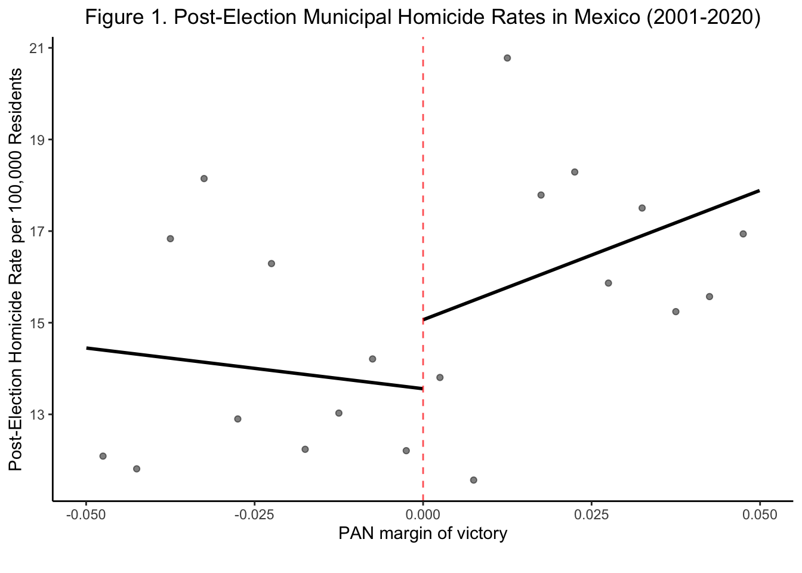
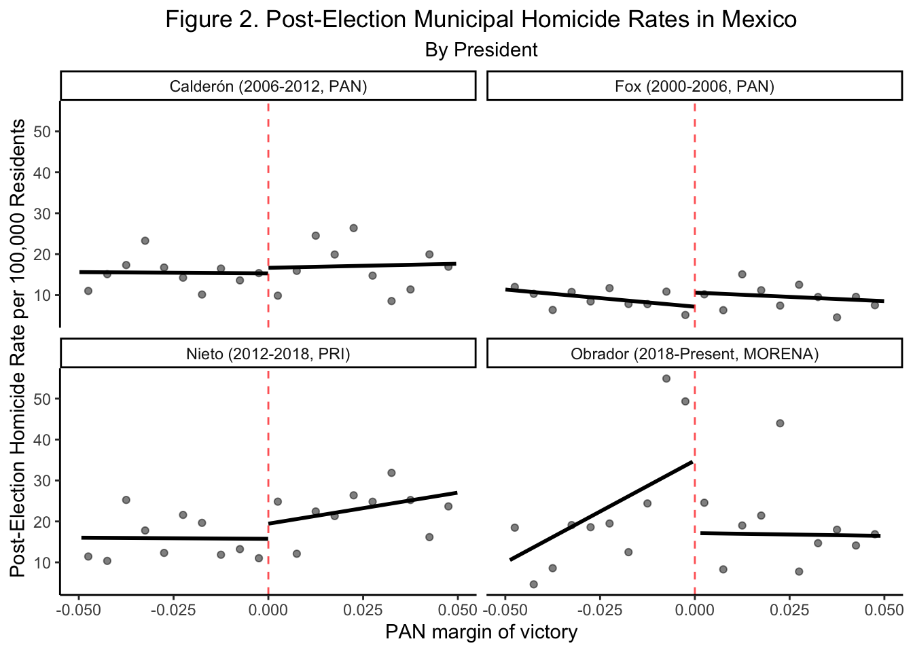

| Variable | Mean | Range |
|---|---|---|
| Municipal Alternation Index | 1.7156863 | 0-7 |
| PAN Power Index | 0.3461106 | 0-7 |
| Margin of Victory (PAN Candidate) | -0.0995015 | -0.469-0.458 |
| Post-election Homicide Rate | 14.1300071 | 0-311.181 |
Partisan Politics and Violent Realities: Exploring the Impact of PAN Electoral Victories on Municipal Homicide Rates in Mexico
I. Introduction
Turf wars for the control of drug trafficking corridors in Mexico have been associated with a lethal crisis of criminal violence in the country since the 1990s. After peaceful coexistence in the 1980s, six turf wars broke out between Mexico’s five major cartels (Tijuana, Juárez, Sinaloa, Gulf, and La Familia Michoacana) on the Pacific Coast between 1990 and 2006 (Trejo and Ley 2018). Annual turf war deaths reached 1,400 in 2006 (Trejo and Ley 2018). In 2006, the Felipe Calderón administration began the first large-scale deployment of federal troops against the drug cartels, marking the beginning of the “Mexican War on Drugs” (Espinosa and Rubin 2015). To implement large-scale efforts to combat drug trafficking, the Calderón administration worked with PAN mayors and municipal police. The crackdowns on drug cartels under Calderón ushered in a dramatic spiral of violence (Trejo and Ley 2018). Between 2007 and 2012, more than 70,000 people were murdered in intercartel conflicts (Trejo and Ley 2018). For political context, Calderón was Mexico’s second National Action Party (PAN) president, continuing PAN’s control of the office after Vicente Fox’s electoral victory for PAN in 2000. Fox’s election as president represented the first opposition candidate to win the presidency of Mexico in recent history, ending the Institutional Revolutionary Party’s (PRI) hegemonic, 71-year-long rule (Trejo and Ley 2018). The Institutional Revolutionary Party (PRI) has historically represented a center-right platform with a broad base of support, while the National Action Party (PAN) emerged as a conservative opposition advocating for free-market economics and social conservatism (Foreign Relations 2024). Afrter Calderón, President Enrique Peña Nieto (PRI) initiated reform efforts in 2012, which, although initially yielding decreases in homicides, ultimately fell short in tackling deep-rooted corruption and crime-related violence, culminating in a peak of 33,341 homicides in 2018 (Foreign Relations 2024). In response to widespread criticism of militarized approaches, President Andrés Manuel López Obrador, a left-wing candidate of the MORENA party, upon assuming office in 2018, vowed to shift towards civilian-led policing; however, despite the implementation of initiatives like the creation of a new National Guard, violence levels have persistently remained high, amplifying the challenges in governance, security, and anti-cartel endeavors (Foreign Relations 2024).
This study delves into the relationship between the success of PAN candidates in Mexican municipal elections and the post-election municipal homicide rate per 100,000 people, while also considering the impact of party rotation in mayoral office and the stability of PAN mayoral governance. Inspired by the work of Trejo and Ley (2018), this research challenges the traditional understanding of a clear separation between government authorities and organized crime groups (OCGs), aiming to explore the ‘gray zone’ where these entities intersect through informal protection systems (Trejo and Ley 2018). Understanding how PAN governance and party alternation may disrupt state-criminal arrangements is essential for comprehending the broader dynamics of violence and governance in Mexico. Independent variables include the margin of victory for the PAN candidate, a municipal alternation index measuring party rotation, and a PAN power index assessing the stability of PAN mayoral terms. The dependent variable is the post-election municipal homicide rate per 100,000 people, encompassing all homicides, not solely those associated with intercartel conflicts.
Mayors play a crucial role in this context. They appoint municipal police chiefs and establish policies governing police conduct (Dell 2015). Consequently, PAN mayors could potentially bolster Calderón’s, and other PAN presidents’, anti-drug efforts by appointing law enforcement authorities amenable to cooperation and by encouraging information-sharing with the PAN federal government. Qualitative evidence suggests that under Calderón’s administration, PAN mayors were more inclined to seek law enforcement assistance from the PAN federal government compared to their non-PAN counterparts (Dell 2015). The propensity for PAN mayors to support Calderón’s war on drugs may stem from various factors, including enhanced cooperation among authorities from the same party, disparities in corruption levels, or ideological alignment (Dell 2015). Ultimately, mayors matter for homicide rates at the municipal level because PAN drug-war operations involving the intervention of federal police and military in cartel activity are most effective when local authorities are politically aligned with the federal government.
II. Literature Review
Previously, scholars have focused on identifying why intercartel violence in Mexico broke out in the early 2000s and estimating the causal effects of military interventions under Calderón on homicide rates in Mexico. According to a 2018 paper by Guillermo Trejo and Sandra Ley, the rotation of political parties in state gubernatorial power in Mexico between 1991 and 2006 significantly contributed to the outbreak of intercartel violence and large-scale criminal wars (Trejo and Ley 2018). Their paper focused on analyzing the period from 1991 to 2006, prior to Calderón’s federal intervention. Trejo and Ley highlight the role of top and mid-level officials’ removal from key state-level institutions, such as the state attorney’s office and the state judicial police, in disrupting informal protections for drug cartels previously provided under the one-party rule of the PRI. From its founding in 1929 to 1988, PRI had won every gubernatorial election in Mexico’s 31 states and nearly all municipal races (Trejo and Ley 2018). The study’s key finding reveals a 55.3% increase in violence in municipalities from states experiencing party alternation at the governor level compared to those under PRI hegemony, indicating a loss of cartel protection (Trejo and Ley 2018). Economic factors and organizational dynamics further strengthened this relationship. Further, time trend analysis suggests a surge in violence during the initial year of opposition governors, reflecting a disruption in government protection networks. Ultimately, Trejo and Ley’s “instability hypothesis” argues that when PRI lost power at the state level an informal network of cartel protection was thrown off leading to an outbreak of inter-cartel violence. Contrary to Trejo and Ley, Melissa Dell’s 2015 paper “Trafficking Networks and the Mexican Drug War” concentrates on the surge in violence following the Mexican government’s War on Drugs between 2007 and 2012, attributing the escalation to rival traffickers vying for territories after crackdowns initiated by PAN mayors, which diverted drug traffic and intensified violence along alternative routes (Dell 2015). Dell’s “diversion hypothesis” posits that crackdowns in one area (i.e. PAN municipalities) lead to the diversion of drug activity and homicides to other regions without substantial reduction (Dell 2015). The key finding indicates that close PAN victories at the municipal level led to approximately 33 more drug trade-related homicides per 100,000 people annually during a mayor’s three-year term (Dell 2015).
While prior research has provided valuable insights into the drivers of drug-related violence in Mexico, there remains a gap in understanding how political governance factors, particularly related to PAN governance stability and mayoral turnover, influence homicide rates at the municipal level after the war on drugs began in 2006 extending to 2020. There are two specific gaps that this paper seeks to address. First, earlier contributions, like Dell, have focused exclusively on drug-related homicides which are defined as “any instance in which a civilian kills another civilian, with at least one of the parties involved in the drug trade” (Dell 2015). This paper uses general homicide rates to include deaths beyond the drug-related homicide definition. For example, instances of those killed in armed clashes between police and organized criminals and the deaths of undocumented immigrants who were targeted by drug cartels for profit during the war on drugs (Rosa Rodrı́guez 2022). This paper sees overall homicide rates as a better measure of the intensity of violence that emerged following the declaration of the Mexican War on Drugs. Second, while Trejo and Ley focus on the impact of party alternation in gubernatorial power on violence between cartels, this paper focuses on the impact of party alternation in mayoral power on municipal homicide rates zooming in on a smaller unit of analysis. Lastly, this analysis aims to make an original contribution to the research base by exploring whether the length that the PAN party held a mayoral office impacted municipal homicide rates.
III. Data
The dataset utilized in this study comprises publicly available data from the National Institute of Statistics and Geography (INEGI), sourced from two GitHub repositories. The first repository aggregates homicide rate data spanning from 2000 to 2021, while the second repository provides election returns data compiled by Eric Magar, a professor of political science at Instituto Tecnológico Autónomo de México, covering the same period of time (Magar 2018 ; Gargiulo 2021). Municipalities in Mexico serve as the unit of analysis for this research, encompassing the period from 2001 to 2020, with 2021 data omitted due to incomplete election cycles given that the next election is not being held until June 2024. Two independent variables are additive index variables I created from the original dataset. The first index variable is a Municipal Alternation Index, measuring the cumulative alternations in party power within municipalities over time. The second index variable is the PAN Power Index, quantifying the consecutive years of PAN governance at the municipal level. The third independent variable, Vote Margin, reflects the margin of victory for PAN candidates in mayoral elections. Elections where the margin of victory falls between -0.05 and 0.05 are considered close elections. The dependent variable in this analysis is the Post-election Homicide Rate, denoting the average homicide rate per 100,000 people in the period following a municipal election. It is calculated for each municipality and election cycle, capturing the level of violence observed in the aftermath of local elections.
IV. Hypotheses
I propose that municipalities experiencing close mayoral elections with a victory for the PAN (National Action Party) will exhibit higher post-election municipal homicide rates compared to municipalities where PAN candidates lost. I expect to observe this pattern from 2001 to 2020 because PAN-led crackdowns on drug trafficking organizations (DTOs) may intensify violence within a municipality. For instance, when law enforcement operations target DTOs, resulting in the arrest or elimination of high-ranking members, it creates vacancies in leadership roles. This vacuum can trigger internal power struggles among lower-ranking members vying for promotion, potentially escalating into violent conflicts as they compete for control within the organization. Furthermore, DTOs under police scrutiny become more vulnerable, attracting attacks from rival DTOs seeking to seize control of profitable drug trafficking routes. These rival DTOs may resort to violent tactics, including armed confrontations and territorial disputes, to exploit the weakened state of the incumbent DTO. Moreover, as criminal groups involved in the drug trade diversify their activities to evade enforcement, they may engage in other forms of criminal behavior such as extortion and human trafficking, specifically of undocumented immigrants as previously mentioned, contributing to increased overall homicide rates (Rosa Rodrı́guez 2022). Therefore, it is plausible to expect that municipalities with PAN candidate victories, which may implement stricter anti-drug policies, could experience higher overall municipal homicide rates due to the ripple effects of anti-drug efforts on broader violence within communities. However, a caveat is that I only expect this relationship to be true when Mexico was under a PAN presidential administration. This is because the PAN party took a law and order stance on drug cartel activity, employing militarized crackdowns that directly antagonized DTOs. However, other parties like PRI and MORENA took less tough on crime approaches to cartel violence which means that at the municipal-level PAN mayors were operating separately from the federal agenda, limiting their power to enforce crackdowns and thus trigger violence at the local level.
Hypothesis 1 (H1): Municipalities with a PAN (National Action Party) candidate victory in local elections will experience a higher post-election municipal homicide rate per 100,000 people compared to municipalities where PAN candidates lost.
Extension Hypotheses
To extend my analysis, I look at the relationship between two governance variables: party rotation in mayoral office and the length of PAN mayoral governance.
I hypothesize that municipalities that experience a higher rotation of party leadership in the mayor’s office will exhibit higher post-election municipal homicide rates. This hypothesis is based on findings by Trejo and Ley that suggests that the rotation of political parties in the at the level of governer significantly contributed to the outbreak of intercartel violence and large-scale criminal wars in the early 2000s (Trejo and Ley 2018). Furthermore, we can expect to see this relationship because each new mayoral administration brings in different priorities, policies, and approaches to addressing crime and a different relationship to DTO’s. This lack of consistency in governance may translate to instability and violence as the power structures of DTOs try to adapt to new governance strategies and politicians.
Hypothesis 2 (H2): Municipalities that experience a higher rotation of political parties in mayoral office will observe a higher post-election municipal homicide rate per 100,000 people compared to municipalities with stable party governance.
Additionally, I hypothesize that municipalities that experience longer stretches of having PAN mayor in office will exhibit lower post-election municipal homicide rates. This hypothesis is based on the premise that the stability provided by prolonged PAN governance may contribute to maintaining law and order, potentially reducing opportunities for violent conflicts to escalate. While H1 posits that PAN mayors trigger instability through crackdowns at first, this hypothesis expects that longevity in PAN governance would increase the effectiveness of PAN crackdowns in the long term.
Hypothesis 3 (H3): Municipalities with a higher index of PAN power stability, indicating longer periods of PAN party governance, will exhibit a lower municipal homicide rate per 100,000 people compared to municipalities with lower PAN power stability.
V. Research Design
I employ a regression discontinuity (RD) approach to leverage the abrupt change in party affiliation at the threshold between PAN victories and losses to estimate the impact on violence for H1. This strategy capitalizes on close election outcomes to isolate idiosyncratic factors, ensuring robust analysis of the relationship between PAN victories and violence levels.
More specifically, in an RDD, treatment assignment is determined by a cutoff point, beyond which units receive treatment and below which they do not. This assignment variable, often referred to as the “running variable,” serves as an observable confounder, influencing both treatment assignment and the outcome. Importantly, treatment is solely determined by the assignment rule, ensuring that the assignment variable is not endogenous to competing interventions.
In the context of this study, the treatment assignment is determined by the electoral margin of victory for the mayoral PAN candidate. For instance, a PAN candidate winning an election by a small margin would be treated, while a loss by a similarly small margin would serve as the control. This setup ensures that treatment assignment is based solely on the electoral outcome and not influenced by other factors, guarding against confounding variables.
The RDD design allows me to estimate the local treatment effect (LATE), which captures the average effect of treatment for units in the vicinity of the cutoff point. Specifically, RDD identifies causal effects for subjects whose scores are close to the cutoff, effectively comparing individuals just above and below the threshold. In this study, the LATE translates to estimating the average effect of PAN victories in close elections on the post-election homicide rate for municipalities near the cutoff. Crucially, the RDD design relies on the continuity assumption, which posits that expected potential outcomes are continuous at the cutoff. This assumption ensures that any discontinuities observed in the outcome variable can be attributed to the treatment effect rather than competing interventions or confounding factors. In summary, the RDD design guards against confounders by leveraging the discontinuity in treatment assignment at the cutoff point, ensuring that treatment is determined solely by the running variable. By estimating the local treatment effect for units near the cutoff, RDD allows me to identify causal effects in this observational study while addressing selection bias.
The rdd model for hypothesis 1 can be expressed as:
\[ \text{Post-Election Homicide Rate}_i = \alpha + \tau D + \beta_1 (X - c) + \beta_2 D(X - c) + \text{Control Variables}_i + \epsilon \]
Here, X represents the margin of victory for PAN mayoral candidates. C represents the treatment cutoff which is this study will be a vote margin of zero. D is a binary variable equal to 1 if X is greater than 0, indicating a PAN win.
The coefficient \(\tau\) represents the effect of being treated, which is when a PAN mayor wins a close election, on the outcome variable of post-election homicide rate while accounting for the local linear relationship between the margin of victory, X, and the outcome. Therefore, \(\tau\) captures the average effect of treatment for the units around the cutoff point or the local average treatment effect (LATE).
The coefficient \(\beta_1\) captures the slope of the relationship between the margin of victory and the post-election homicide rate in the vicinity of the cutoff (zero) when D = 0, indicating a PAN loss. Essentially, it indicates the change in the outcome for a one-unit change in the margin of victory around the cutoff, holding D constant at 0.
The coefficient \(\beta_2\) captures the discontinuity in the relationship between the margin of victory (X) and the outcome (Y) at the cutoff when D=1, indicating a PAN win. It measures the difference in the slope of the relationship between X and Y on either side of the cutoff due to the treatment effect. Essentially, it captures how the effect of the margin of victory on the outcome changes abruptly at the cutoff due to winning a close election.
Extension Hypotheses Regression Models
A significant challenge to hypothesizing a causal relationship between the PAN party winning the election and its effect on the post-election average homicide rate is the presence of unobserved confounders, variables that are not included in the analysis but are correlated with both the independent variable and the outcome. These unobserved confounders can bias the estimated causal effect if they are not properly accounted for.
Additionally, endogeneity threatens causal inference due to bidirectional relationships between the PAN party winning and increases in municipal homicide rates. In this case, the stability of the PAN party itself could be endogenous to homicide rates within municipalities. For example, if high homicide rates persist over time, voters may continue to support the PAN party due to its perceived stance on law and order. Moreover, political party stability can also affect policy decisions related to crime and violence. If the PAN party has a stable grip on power within a municipality, it may be better positioned to implement long-term policies and allocate resources towards crackdowns on drug cartels. However, if the party’s tenure in a municipality is uncertain, anti-cartel policy continuity may be disrupted, leading to inconsistencies in crime-fighting strategies, potentially influencing homicide rates.
Hypotheses 2 and 3 provide empirical extensions that can help to rule out potential confounders of Hypothesis 1 regarding the causal relationship between PAN party victories and post-election municipal homicide rates. H2 focuses on the rotation of political parties in mayoral office, drawing insights from Trejo and Ley, who found that such rotations contributed to increased inter-cartel violence before the Mexican War on Drugs. By examining the impact of party rotation on homicide rates, H2 aims to differentiate between stable and unstable party governance at the municipal level.
The regression model for Hypothesis 2 (H2) can be expressed as:
\[ \text{Post-election Homicide Rate}_i = \alpha + \beta_1{Party Alternation Index}_i + \text{Control Variables}_i + \epsilon \]
In contrast, H3 tests the opposite direction of Trejo and Ley’s hypothesis by exploring the impact of PAN power stability, specifically examining longer periods of PAN governance, on homicide rates. H3 considers the potential stabilizing effect of prolonged PAN governance, which may lead to lower levels of violence due to the implementation of effective crime prevention strategies and establishment of stronger institutional frameworks. Therefore, while H2 focuses on the destabilizing effect of party alternation, H3 considers the potential stabilizing effect of prolonged PAN governance. Although they approach the concept of political stability from different angles, both hypotheses contribute to understanding how political party dynamics affect municipal homicide rates, offering complementary insights into the relationship between stability and violence and helping to mitigate potential confounding factors like political stability and instability.
The regression model for Hypothesis 3 (H3) can be expressed as:
\[ \text{Post-Election Homicide Rate}_i = \alpha + \beta_1{PAN Power Stability Index}_i + \text{Control Variables}_i + \epsilon \]
For all models, I will be controlling for municipal population.
VI. Findings
Graphical Analysis of Violence Pattern
Figure 1 examines post-election homicide rates against the PAN margin of victory across municipalities from 2001 to 2020, with a negative margin indicating a PAN loss. Each point represents average violence in 0.5 percentage point vote spread bins. The solid line plots predicted values from a regression of violence on the vote spread, estimated separately on either side of the PAN win-loss threshold. Across this large time frame, PAN victories had a substantive effect on the average post-election homicide rate, increasing the rate by approximately 2% following a close PAN victory, increasing from 14% to 16%, as compared to a close PAN loss. Figure 1 supports my hypothesis that municipalities with a PAN candidate victory in local elections will experience a higher post-election municipal homicide rate per 100,000 people compared to municipalities where PAN candidates lost.

Figure 1. This figure plots homicide rates against the PAN margin of victory for 2001-2020, with a negative margin indicating a PAN loss. Each point represents the average value of the outcome in vote spread bins of width one-half of a percent-age point. The solid line plots predicted values, with separate quadratic vote spread trends estimated on either side of the PAN win-loss threshold.
Figure 2 examines post-election homicide rates against the PAN margin of victory across municipalities and presidencies, with a negative margin indicating a PAN loss. Each point represents average violence in 0.5 percentage point vote spread bins aggregated by president in office. The solid line plots predicted values from a regression of violence on the vote spread, estimated separately on either side of the PAN win-loss threshold. Breaking the regression discontinuity down by president reveals interesting trends. Figure 2 shows that while a PAN candidate was president, either when Vicente Fox or Felipe Calderón was in office from 2000-2012, PAN victories at the municipal level had a positive effect on the average post-election homicide rate, increasing the rate by approximately 2% following a close PAN victory, as compared to a close PAN loss. This finding also supports my hypothesis showing that a PAN victory at the municipal level under a PAN president increased violence as a result of crackdown on drug cartels. Figure 2 also shows that under president Nieto, a PRI candidate, the post-election homicide rate increased by approximately 5% in municipalities with close PAN victories. Lastly, Figure 2 shows that under president Obrador, a MORENA candidate, the post-election homicide rate decreased by approximately 20% in municipalities with close PAN victories.

Figure 2. This figure plots homicide rates against the PAN margin of victory for 2001-2020 by president, with a negative margin indicating a PAN loss. Each point represents the average value of the outcome in vote spread bins of width one-half of a percent-age point. The solid line plots predicted values, with separate quadratic vote spread trends estimated on either side of the PAN win-loss threshold.
Regression Analysis
| Bivariate | |
|---|---|
| PAN Win (with Control) | 1.875(3.349) |
| PAN Win (Fox 2000-2006, PAN) | 2.897(3.762) |
| PAN Win (Calderón 2006-2012, PAN) | 0.914(5.643) |
| PAN Win (Nieto 2012-2018, PRI) | 6.514*(5.350) |
| PAN Win (Obrador 2018-Present, MORENA) | -24.841(37.325) |
Table 2. H1 Regression Table.
Table 2 presents estimates of the effect of PAN (National Action Party) winning close municipal elections on the post-election homicide rate per 100,000 people. The table shows the H1 model overall as well as the H1 model subsetted by president. In all models, the municipal population is controlled for. In Table 2, the overall Local Average Treatment effect (LATE), controlling for municipal population, is 1.875. This means that from 2001-2020 a PAN mayoral win causes an almost 2-point increase in the post-election homicide rate at the municipal level. Substantively, this a significant effect. For example, a municipality with a population of 643,447 people that experienced a 2% homicide rate increase would correspond to approximately 12.87 more homicides on average. However, this 2 point bump is not statistically significant (p > 0.05).
The magnitude of the LATE changes when the model is run independently for each presidential administration. During the PAN Fox administration (2000-2006), the LATE increases to 2.897. During the PAN Calderón administration (2006-2012), the LATE decreases to 0.914. Given that the Calderón administration is the administration that officially began the war on drugs, the decrease in the LATE from the Fox to Calderón administration shows that under Calderón the effect of a PAN municipal win caused a smaller increase in the post-election homicide rate than under Fox. However, these coefficients are statistically insignificant. During the PRI party Nieto administration (2012-2018), the LATE increases to 6.514. This is the only coefficient in Table 2 that reaches conventional levels of statistical significance (p > 0.05). Interpreted in a real-world context, this coefficient means that the effect of a PAN municipal win caused a larger increase in the post-election homicide rate than under a PRI president. This shows that when the presidential administration and local government are unaligned, given that PAN and PRI are opposing parties, PAN mayors may be less effective at imposing a crackdown on criminal violence at the municipal level. Under the MORENA party Obrador (2018-Present), the LATE for PAN wins drastically decreases to -24.841. This coefficient is an extremely large, but not statistically significant, and should be interpreted with caution. The decrease in the LATE under President Andrés Manuel López Obrador’s administration could be attributed to President Obrador’s shift towards civilian-led policing however more research would be needed. The lack of statistical significance for most coefficients, including the large effect under Obrador, could be influenced by sample size. Notably, the sample size for the Obrador administration is very small, 375 observations, which may reduce the statistical power of the hypothesis test. A smaller sample size can lead to wider confidence intervals and decreased sensitivity to detect true effects, making it more challenging to achieve statistical significance.
| Bivariate | |
|---|---|
| (Intercept) | 12.934*** (0.274) |
| Party Alternation Index | 0.668*** (0.119) |
| Municipal Population | 0.000 (0.000) |
| Num.Obs. | 12364 |
| R2 Adj. | 0.002 |
Table 3. H2 Regression Table.
Table 3 shows that for each unit increase in the Municipal Alternation Index, which indicates an increase in the cumulative amount of alternations in party power within municipalities over time, there is an increase of 0.668 in the post-election average homicide rate, holding municipal population constant. Substantively, the effect size is a significant magnitude, indicating that party alteration is associated with noticeable changes in the post-election homicide rate. The coefficient for the alternation_index variable is also statistically significant at conventional levels (p < 0.001) indicating that the observed relationship between alternation index and post-election homicide rate is unlikely to have occurred by chance.
| Bivariate | |
|---|---|
| (Intercept) | 14.084*** (0.196) |
| PAN Power Index | 0.009 (0.220) |
| Municipal Population | 0.000 (0.000) |
| Num.Obs. | 12364 |
| R2 Adj. | 0.000 |
Table 4. H2 Regression Table.
Table 4 shows that for each unit increase in the PAN Power Index, which indicates an increase in the consecutive years of PAN governance at the municipal level, there is an increase of 0.009 in the post-election average homicide rate, holding municipal population constant. Substantively, the effect size is somewhat small, indicating that PAN power stability is somewhat associated with a small increase in the post-election homicide rate. The coefficient for the PAN Power Index variable is also not statistically significant at conventional levels.
VII. Discussion and Policy Implications
Overall, there is evidence in support of H1 that municipalities with a PAN candidate victory will experience higher post-election homicide rates. However, this was only true when a PAN or PRI candidate was in presidential office. That is, when a hyper-aligned or unaligned candidate was president. When the third party, MORENA, was in power, municipalities with a PAN candidate victory experienced much lower post-election homicide rates. This may suggest that polarized stances on drug cartels influences municipal homicide rates. However, we must interpret these findings with caution given that the only statistically significant effect was found for the model run for elections that occurred during the Nieto administration. There is also evidence in support of H2, that municipalities with higher party rotation in mayoral office will have higher post-election homicide rates, and H3, that municipalities with longer periods of PAN mayoral governance will exhibit lower post-election homicide rates. However, it seems party rotation has a bigger positive effect on post-election homicide rates than PAN party stability. In sum, my findings indicate that PAN governance, increased party alteration, and increased PAN party rule at the municipal level is correlated with a increase in post-election homicide rates.
In terms of methodology, my findings suggest that RDD may not be an appropriate research design to measure the variation in the effect of PAN municipal governance on post-election homicide rates across presidential administrations given the lack of statistical significance in my findings. In particular, the RDD model is sensitive when it comes to small sample sizes as seen with the large negative Obrador coefficient. Thus, although my hypothesis is valid under the context of PAN presidents, we will need to reconsider how to measure the effect of PAN governance at the municipal level on homicide rates when it is threatened by the confounder of presidential oversight.
While the results provide valuable insights into the complex relationship between political dynamics and crime rates in Mexico in the context of the War on Drugs, they are not conclusive. The lack of statistical significance in some cases and the variations across presidential administrations highlight the need for further research. Future studies could delve deeper into how federal-local party alignment may influence the implementation of drug-crime policy and effect crime rates. Additionally, my empirical extension did not rule out the confounders of party stability and PAN time in power. Instead, the H2 and H3 models confirmed that frequent changes in what party is in power at the municipal level and the increased tenure of PAN mayors both increase post-election municipal homicide rates.
From a policy perspective, this project provides evidence that PAN municipal governance under PAN presidents has been largely ineffective at decreasing violence with tough-on-crime stances leading to an increase in post-election homicide rates. Additionally, when examining crime policy at the municipal level, Mexican policymakers should consider the impact of political party stability on their work. If policies are likely to not survive into the next administration, increasing instability in the local government-cartel relationship, the policies may be more likely to increase municipal violence. Crime approaches which help maintain stability in the government’s treatment of cartels and avoid shifting cartel power dynamics may be less likely to promote the onset of high rates of homicidal violence.
References
Dell, Melissa. 2015. “Trafficking Networks and the Mexican Drug War.” American Economic Review 105 (6): 1738–79.
Espinosa, Valeria, and Donald B Rubin. 2015. “Did the Military Interventions in the Mexican Drug War Increase Violence?” The American Statistician 69 (1): 17–27.
Foreign Relations, Council on. 2024. “Global Conflict Tracker: Criminal Violence in Mexico.” https://www.cfr.org/global-conflict-tracker/conflict/criminal-violence-mexico.
Gargiulo, Maria. 2021. “Monthly municipal-level crude homicide rates in Mexico from January 2000 to December 2022.” https://github.com/thegargiulian/mexico-homicide-rates.
Magar, Eric. 2018. “Recent Mexican Election Vote Returns.” https://github.com/emagar/elecRetrns.
Rosa Rodrı́guez, Paola Iliana de la. 2022. “The Mexican War Against Drug Cartels, Traffickers’ Collateral Incentive to Commit Crimes Against Undocumented Immigrants.” Estudios Fronterizos 23.
Trejo, Guillermo, and Sandra Ley. 2018. “Why Did Drug Cartels Go to War in Mexico? Subnational Party Alternation, the Breakdown of Criminal Protection, and the Onset of Large-Scale Violence.” Comparative Political Studies 51 (7): 900–937.